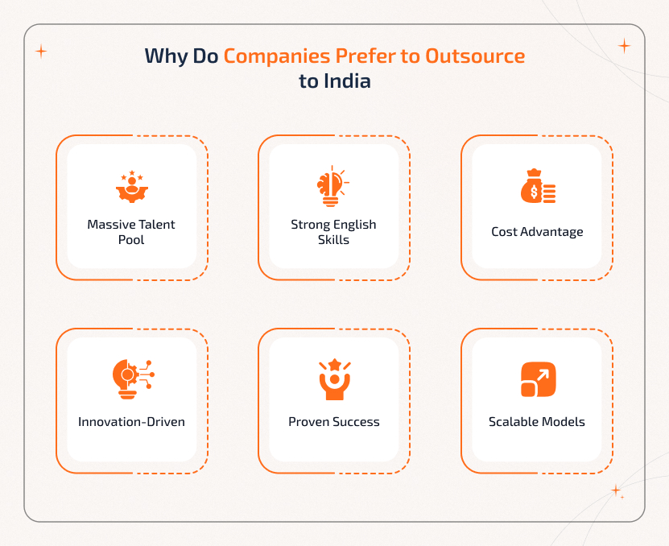
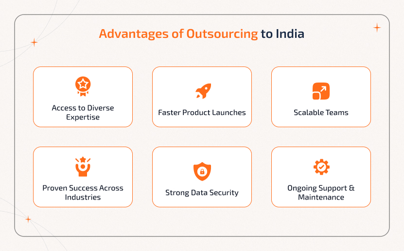
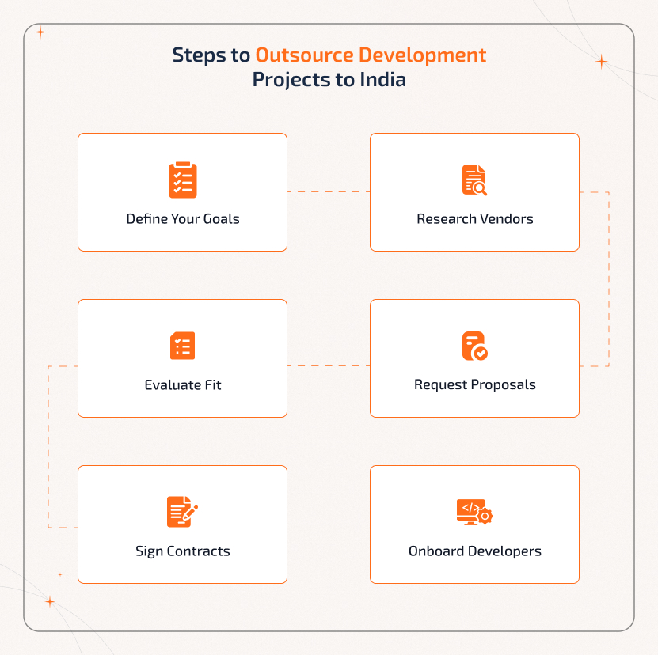
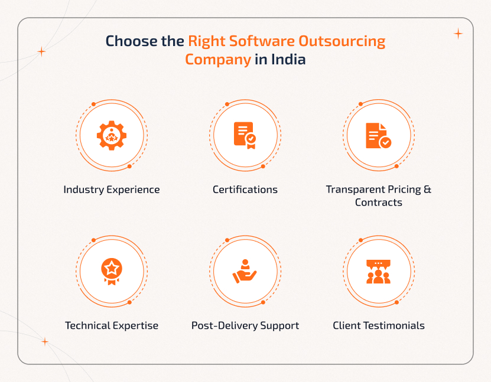
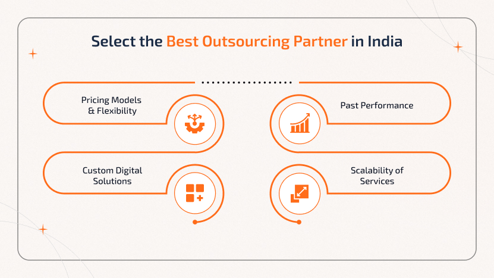
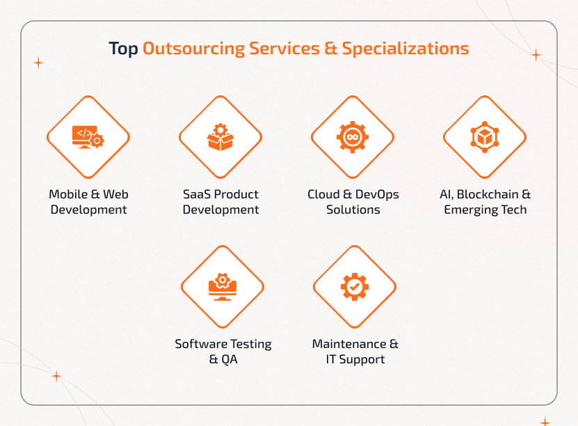
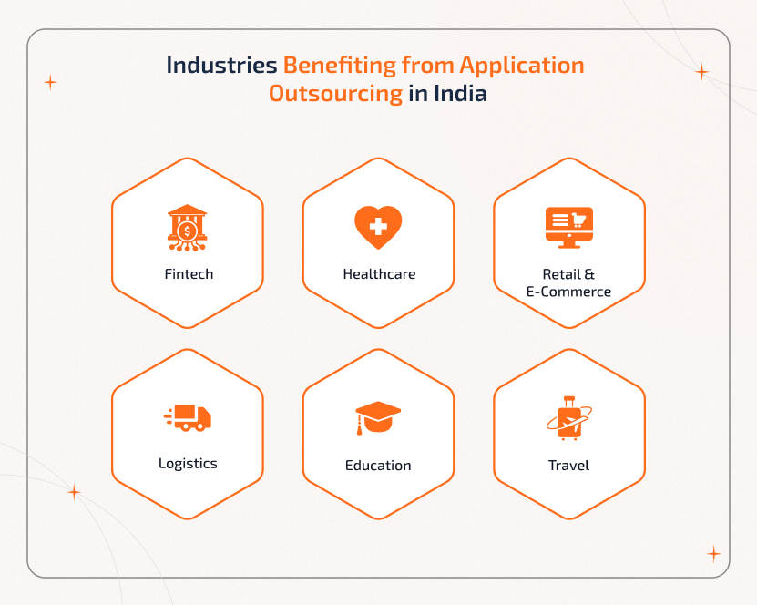
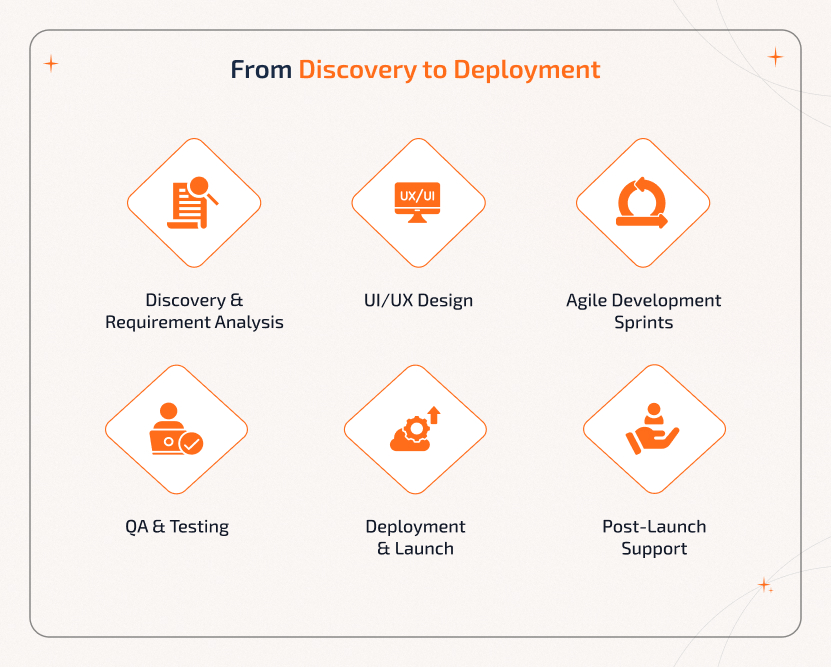
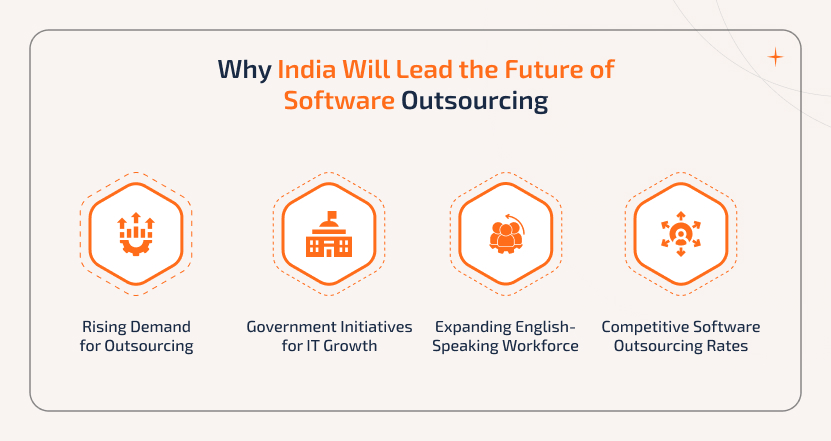

In the digital-first era, businesses are looking to find the right skills for their software development projects without overspending. Amongst the nations, India holds a huge talent pool of software developers who possess strong technical expertise and years of experience working with global clients. Thus, software development outsourcing to India is now the go-to strategy for startups, SMBs, and enterprises looking to reduce costs while speeding up their digital presence.
Businesses working with Indian software outsourcing companies will get access to skilled developers, modern technologies, and flexible outsourcing services.
Whether it is AI integration, mobile app development, web app development, cloud solutions, or software testing, outsourcing to India not only ensures high-quality work but also offers lower costs compared to the US or Europe. With proven reliability and scalable services, India has earned its place as the world's top destination for IT outsourcing.
Why Do Companies Prefer to Outsource Software Development to India
Businesses choose to outsource software development to India for many reasons, as it combines affordability, expertise, and dependability like no other destination. Here are the key reasons:

1. Massive Talent Pool
There are over 5 million IT professionals in
India, giving businesses access to specialists in every technology and industry.
2. Strong English Skills
Most Indian developers are fluent in English.
With clear communication, they can collaborate with international clients
seamlessly.
3. Cost Advantage
Developing software apps and solutions costs
significantly less than what’s charged in the USA or Europe. Above all, projects are
delivered without compromising on quality.
4. Innovation-Driven
Most Indian outsourcing firms are leaders in modern
solutions like cloud computing, AI, and digital transformation services.
5. Proven Success
India has decades of experience in global outsourcing
and has earned the trust of startups to Fortune 500 companies.
6. Scalable Models
Whether you are a small business
or a large enterprise, outsourcing companies in India provide flexible engagement
models to match your needs.
Current Outsourcing Rates & Pricing Models
One of the biggest advantages for businesses choosing software development outsourcing to India is the cost benefit. You can hire app developers in India who are highly skilled or an entire team at a much lower cost than Western rates.
1. Hourly Rates - Typically range between $18–$40, depending on skills and expertise.
2. Dedicated Team - Hiring a full-time team costs around $3,000–$7,000 per month.
3. Project-Based Pricing - Varies based on the project size, features, and complexity.
Besides this, Indian outsourcing companies provide flexible pricing models to fit different needs:
1. Fixed Price - Best for projects with a clear scope and timeline.
2. Time & Material - Ideal if your business needs or requirements evolve over time.
3. Dedicated Team - Perfect for projects that require ongoing development and long-term support.
Advantages of Outsourcing to India
When businesses outsource software development to India, the advantages go beyond cost savings.

1. Access to Diverse Expertise
Most outsourcing companies in India cover
all technology stacks, from mobile apps to enterprise solutions. Whether you need web development, AI integration, or software testing,
you can find the right experts for your requirements.
2. Faster Product Launches
Indian developers follow agile and modern
project management practices, allowing businesses to release products quickly and
stay ahead of competitors.
3. Scalable Teams
By hiring developers in India, companies gain the
flexibility to scale teams up or down based on project size and demand.
4. Proven Success Across Industries
Outsourcing programmers from India
has worked across industries like finance, healthcare, and eCommerce, making it a
reliable choice with a global track record.
5. Strong Data Security
Leading outsourcing firms in India follow strict
security protocols and international standards, ensuring sensitive business data
remains protected.
6. Ongoing Support & Maintenance
Partnering with a
software development company in India doesn’t end at launch. Many IT firms provide
continuous updates, bug fixes, and support to keep products running smoothly.
Time Zone Advantage & 24/7 Development Cycle
One of the biggest advantages to outsource development to India is the time zone difference. With India being 9–12 hours ahead of the US and Europe, businesses can take advantage of a true round-the-clock development cycle.
For example, while your in-house team finishes work for the day, your Indian outsourcing team continues to progress overnight. By the time you return to work, new updates, features, or bug fixes are ready for review. This continuous workflow not only reduces turnaround time but also speeds up time-to-market, keeping projects moving without delays.
Cost Comparison - India vs Other Countries
When it comes to software outsourcing, cost is often the biggest factor influencing business decisions. A clear comparison of rates across regions shows why India stands out as the most cost-effective destination without compromising quality.
- USA/Canada - $80-$150/hour
- Eastern Europe - $40-$70/hour
- Philippines/Vietnam - $25-$50/hour
- India - $18-$40/hour
This clear difference shows how Indian software outsourcing offers unbeatable value for startups, SMBs, and enterprises alike. Businesses can maximize ROI and allocate budgets to other growth areas while still receiving high-quality, reliable software solutions.
We deliver software solutions from India that cut costs & drive business growth.
Steps to Outsource Development Projects to India
Many times, businesses think outsourcing might be complicated. However, in reality, the process is easier than it seems. If you are wondering how to outsource software development to India, here is a simple step-by-step approach:

1. Step 1: Define Your Goals
Businesses can start by outlining the needs
and requirements of their projects as the first step. You should be clear about the
features you want to include, budget range, and expected timelines. With this, the
outsourcing companies in India will clearly understand your vision from the very
beginning.
2. Step 2: Research Vendors
You should research to find the top software
outsourcing companies in India that can handle your project and match your needs.
3. Step 3: Request Proposals
Businesses can shortlist a few trusted
vendors and ask for proposals. You can compare their pricing, delivery models, and
experience to identify those who provide the best value for your project.
4. Step 4: Evaluate Fit
You should proceed with reviewing outsourcing
companies’ portfolios, case studies, and client testimonials to find out if they
have handled similar projects successfully. This step ensures reliability and domain
expertise.
5. Step 5: Sign Contracts
Once you choose a vendor, sign a detailed
agreement that covers IP rights, service-level agreements (SLAs), milestones, and
payment terms to avoid confusion later.
6. Step 6: Onboard Developers
Finally, you can integrate the Indian
development team into your workflows. Share tools, communication channels, and
cultural expectations so that both in-house and outsourced teams can work together
seamlessly.
By following the above steps, outsourcing to India becomes a smooth, transparent process for any business, as these companies ensure high-quality results while keeping the cost under control.
Hidden Costs & Risks Involved in Outsourcing Software Development Companies in India
Although outsourcing software development to India offers huge benefits, it does come with certain risks like any other business when not managed properly. Some of the most common challenges associated with the process are explained in brief below:
1. Unexpected Costs
Businesses may end up paying extra fees later in the
project when contracts are vague or requirements are not clear.
2. Communication Gaps
Cultural differences or poor communication channels
can lead to misunderstandings.
3. Data Security Risks
Working with unverified vendors can put sensitive
business data at risk.
4. Time Zone Challenges
Without proper planning, overlapping work hours
can be difficult to manage.
The best part is that all of these risks can be avoided by choosing reputed IT outsourcing companies in India. These experienced vendors follow strict security protocols, offer transparent contracts, and use well-defined communication processes. This way, you will get better collaboration and predictable results.
- Clearly define the scope, features, and milestones in your contract.
- Select vendors who clearly showcase their projects in their portfolio and have verified client references.
- Ensure the outsourcing company uses trusted project management and communication tools like Jira, Slack, or Microsoft Teams. This ensures your collaboration is safe, transparent, and organized.
- Set at least a few shared working hours between your team and the outsourcing company in India. This opens the possibility for real-time discussions, quick feedback, and faster decision-making despite time zone differences.
- Always choose IT outsourcing companies in India that are certified (ISO, CMMI, or GDPR compliant) and have a proven track record. This guarantees reliability, stronger data security, and high-quality delivery.
How to Choose the Right Software Outsourcing Company in India
Choosing the right outsourcing service company is the most important step to ensure project success. A trusted partner does not just provide you with developers, but also offers the right support for your business. The key factors to consider are as follows:

1. Industry Experience
Ensure you choose vendors who hold domain
knowledge in your industry and have proven experience in app, web, or enterprise
software development.
2. Certifications
Businesses should check for standards like ISO, GDPR,
HIPAA, or CMMI, as they show commitment to quality and security.
3. Transparent Pricing & Contracts
A reliable partner will provide clear
cost estimates and detailed agreements with no hidden charges.
4. Technical Expertise
Ensure the outsourcing company’s tech stack and
tools align with your project needs, whether it’s AI, cloud, mobile, or enterprise
systems.
5. Post-Delivery Support
Look for outsourcing companies in India that
offer ongoing maintenance, bug fixes, and updates after launch.
6. Client Testimonials
Read use case studies and reviews to check their
track record and customer satisfaction.
By evaluating all these factors, you will be able to choose and work with a reliable outsourcing service provider in India that can deliver high-quality results on time while ensuring security and compliance.
Our India-based outsourcing team delivers fast, scalable, & cost-efficient solutions.
How to Compare & Select the Best Outsourcing Partner in India
To get the best results from software development outsourcing to India, businesses need to compare vendors before making a decision. The goal is to choose a partner who not only delivers high-quality work but also adds long-term value. The key criteria include:

1. Pricing Models & Flexibility
Businesses can compare vendors based on
their engagement models such as fixed, time & material, or dedicated teams. The
right software development outsourcing partner should offer flexibility that matches
your budget and project type.
2. Past Performance
Review the company’s track record in development
outsourcing. Case studies, portfolios, and client references showcase a clear
picture of the company’s reliability and delivery quality.
3. Custom Digital Solutions
The needs and goals of every project differ.
Hence, it is vital to choose a vendor who can provide custom digital outsourcing
solutions tailored to your business goals instead of a one-size-fits-all approach.
4. Scalability of Services
Over time, business needs will grow, and the
best outsourcing companies in India will be able to scale teams, technologies, and
services as your project expands.
By comparing vendors across these factors, businesses can maximize ROI, reduce risks, and ensure they partner with a company that supports both immediate needs and future growth.
Global Software Outsourcing Market Trends
As per stats, the global software engineering outsourcing market is all set to cross $1 trillion by 2030, and India is expected to remain the largest contributor to this growth. Businesses across the globe are increasingly relying on outsourcing to stay competitive, cut down costs, and access specialized expertise.
Some of the key trends shaping the industry include the following:
1. AI & ML Outsourcing Services
Companies are outsourcing projects that
involve artificial intelligence, machine learning, and automation to integrate
advanced capabilities without spending much on in-house teams.
2. Mobile Application Development Outsourcing in India
With mobile-first
solutions driving business growth, India has become the go-to hub for outsourcing
mobile app design and development.
3. Hybrid Outsourcing Model
Most organizations are currently blending
offshore teams in India with nearshore teams for greater flexibility, faster
delivery, and cost efficiency.
4. Demand for Software Testing Outsourcing
Quality assurance and testing are increasingly outsourced to
Indian companies as they ensure faster releases with reliable performance.
These are the emerging trends that show how India continues to lead the way in software outsourcing while offering both affordability and innovation to global businesses.
Top Outsourcing Services & Specializations
India has become the leading destination for a wide range of IT services. Although many businesses outsource web development to India, the country's outsourcing companies offer much more. Here are the most in-demand specializations:

1. Mobile & Web Development Indian developers deliver scalable, user-friendly solutions for global businesses that cover everything from responsive websites to feature-rich mobile apps.
2. SaaS Product Development Businesses rely on India for building secure, cloud-based SaaS platforms that support subscription models and rapid scalability.
3. Cloud & DevOps Solutions Businesses can reduce downtime and optimize operations by outsourcing cloud migration, infrastructure setup, and DevOps automation to India.
4. AI, Blockchain & Emerging Tech With expertise in cutting-edge technologies, India is a hub for projects that involve artificial intelligence, blockchain solutions, and other digital innovations.
5. Software Testing & QA Outsourcing software testing to India ensures faster bug detection, improved performance, and reliable end-user experiences.
6. Maintenance & IT Support Beyond development, Indian outsourcing companies offer ongoing support, updates, and IT helpdesk services that keep systems running smoothly.
By outsourcing these services, businesses not only cut costs but also gain access to specialized expertise that can accelerate digital transformation.
Industries Benefiting from Application Outsourcing in India
Application outsourcing in India is not only limited to one sector, rather it involves providing transformation across industries. Check out the section below to know how different sectors are getting the benefits:

1. Fintech – Secure Digital Payment Apps
Indian outsourcing companies
build fintech apps using advanced security, compliance, and features like UPI, fraud
detection, and mobile wallets.
2. Healthcare – HIPAA-Compliant Solutions
Healthcare providers outsource
to India for patient management systems, EMR solutions, and telemedicine apps that
are built to meet HIPAA and GDPR standards.
3. Retail & E-Commerce – Scalable Online Stores
Businesses leverage
outsourcing for feature-rich eCommerce platforms with payment gateway integration,
AI-driven recommendations, and smooth user experiences.
4. Logistics – Supply Chain Optimization Tools
Indian developers often
create logistics apps that improve fleet tracking, delivery efficiency with
real-time updates, and warehouse automation.
5. Education – eLearning & LMS Platforms
The education sector benefits
from custom learning management systems, online classrooms, and interactive
eLearning apps tailored for scalability.
6. Travel – Booking & Mobility Solutions
Travel companies outsource app development for online booking
engines, mobility apps, and AI-based personalization to enhance customer
experiences.
Outsourcing to India offers benefits like gaining cost efficiency, faster time-to-market, and access to specialized expertise that drives innovation in digital solutions.
From Discovery to Deployment – The Proven Outsourcing Roadmap
Upon outsourcing software development to India, projects typically follow a structured approach that ensures quality and timely delivery. The key phases include:

1. Discovery & Requirement Analysis
This is the primary step that involves
in-depth discussions to understand your business needs, target audience, and project
scope. Outsourcing partners in India provide clear documentation that avoids any
gaps later.
2. UI/UX Design
Designers will craft user-friendly interfaces and
experiences that ensure the application is intuitive, engaging, and aligned with
your brand identity.
3. Agile Development Sprints
The development approach follows the agile
methodology with iterative sprints. This allows flexibility, transparency, and
faster delivery of working features.
4. QA & Testing
With dedicated QA teams, outsourcing companies conduct
functional, performance, and security testing to ensure the software is robust,
bug-free, and ready for real-world use.
5. Deployment & Launch
The application is deployed on the desired platform
(cloud, web, or mobile), with all configurations done for seamless integration and
performance.
6. Post-Launch Support
After launch, Indian outsourcing companies offer
continuous monitoring, updates, and support to ensure the software evolves with your
business needs.
Thus, this level of phased approach helps businesses minimize risks, control costs, and maintain consistent quality throughout the outsourcing journey.
Why Do You Need Strong QA & Testing in Software Outsourcing?
When businesses outsource software development to India, it is vital to ensure quality assurance (QA) and testing just as much as coding. With a structured testing strategy, companies can reduce risks, prevent costly failures, and deliver software that users can trust. Almost all of the leading outsourcing QA services in India focus on:
1. Automation Testing - Faster execution of repetitive tasks with consistent results.
2. Manual Testing - Real-world usability and user experience validation.
3. Performance & Load Testing - Ensures applications scale under heavy demands.
4. Security Testing - Protects data and meets global compliance standards like GDPR, HIPAA, PCI, and DSS.
Real-World Success Stories of Outsourcing to India
Outsourcing is not just about cost-cutting. It delivers measurable business impact. Most companies validate the success of software development outsourcing to India through the following proven results:
1. According to Scaleupallu, outsourcing software development to India can cut down development costs by up to 60%, especially when compared to US or Western European rates.
2. As per Techosquare, mobile app projects outsourced to India often cost 40–50% less while still benefiting from skilled development teams and faster delivery times.
3. India attains approximately 44% of the global outsourcing market, showcasing its strong reputation in IT, software, and back-office services.
Best Cities in India for Software Development Outsourcing
India's outsourcing ecosystem thrives across multiple cities, and every location comes with unique strengths.
1. Bengaluru – The IT Capital & Innovation Hub
Being the Silicon Valley
of India, Bengaluru hosts IT giants, R&D centres, and global start-ups. You will
find specializations including enterprise software, AI, cloud computing, and product
engineering.
2. Pune – Start-ups & Product Development
Pune excels in SaaS product
development, custom app development, and engineering outsourcing. It is
cost-effective while maintaining high-quality talent and thus is ideal for startups
and mid-sized companies.
3. Chennai – Skilled in Mobility & AI Solutions
Chennai is another leader
in mobile app outsourcing, AI-powered solutions, and enterprise applications. It has
a deep talent pool for scalable and innovation-driven projects.
4. Coimbatore – Emerging Tech & Cost-Efficiency Outsourcing
Coimbatore is
known as a rising IT hub and is gaining attention for affordable & custom software development, AI/ML
projects, and custom application outsourcing. It is a smart choice for businesses
seeking quality at scale while maintaining lower operational costs and a growing
skilled workforce.
5. Gurugram – Fintech & BPO Outsourcing Services
Gurugram is known for fintech software, outsourcing services, and BPO/KPO
operations. It benefits from its proximity to New Delhi and access to multinational
clients.
Why India Will Lead the Future of Software Outsourcing?
The future of outsourcing in India remains highly promising as the global business market continues to rely on its vast IT ecosystem. Several factors drive this growth, including:

1. Rising Demand for Outsourcing
India's IT service industry is scaling
up to meet advanced tech outsourcing needs as businesses across the globe adopt
cloud computing, AI, and digital transformation.
2. Government Initiatives for IT Growth
Programs like Digital India,
Startup India, and incentives for IT parks ensure connectivity, infrastructure, and
skill development required to meet global demands.
3. Expanding English-Speaking Workforce
India's large pool of skilled
professionals fluent in English makes communication seamless. This is another key
driving force in global software development outsourcing.
4. Competitive Software Outsourcing Rates
When compared to the US and
Europe, India offers cost savings of up to 60–70%. This is achieved while
maintaining quality through world-class developers and IT companies.
Thus, with the mix of talent, innovation, and cost efficiency, India is all set to remain the global outsourcing leader well beyond 2030. This covers areas like AI, IoT, blockchain, and cross-platform development.
Why Choose Sparkout Tech for Software Development Outsourcing?
Outsourcing software development in India is not just beneficial for cost reduction, but it is all about partnering with the right team that ensures quality, innovation, and scalability. At Sparkout Tech, we go beyond being a software outsourcing company as we deliver end-to-end solutions customized to your business goals.
1. Proven expertise and years of success in custom app development outsourcing in India.
2. Agile sprints and delivery teams ensure faster time-to-market.
3. Expertise in future-ready tech stacks like AI, blockchain, cloud, etc.
4. Flexible engagement models that suit your growth and budget.
5. A quality-first approach with a robust QA & testing strategy to deliver bug-free solutions.
6. A globally trusted partner with long-term collaboration with startups and global enterprises.
By partnering with Sparkout, you don't just get outsourced developers but a strategic partner invested in your growth.
Partner with Sparkout for cost-effective, scalable & innovation-driven software development outsourcing.
Conclusion
Software development outsourcing to India in the current era is all about growth and not just a cost-cutting strategy. From outsourcing programming to India to mobile application development outsourcing, Sparkout Tech helps businesses across the world gain speed, efficiency, and scalability.
India remains the most reliable destination for innovation and value, whether you are looking at the benefits of outsourcing software development to India or exploring the steps to outsource projects.